FYI, a whole iOS app drawn by hand
- The challenge
- The work around a creative project is mostly conversation, so the project should live where the chat already is.
- What I designed
- FYI (Focus Your Ideas), a dark iOS app I designed at Intune before Hear: messages turn into tasks, an AI assistant joins the thread and calls share the screen.
- Outcome
- The onboarding, the chat, task and call flows, and the design system behind them, every screen drawn by hand in Figma.
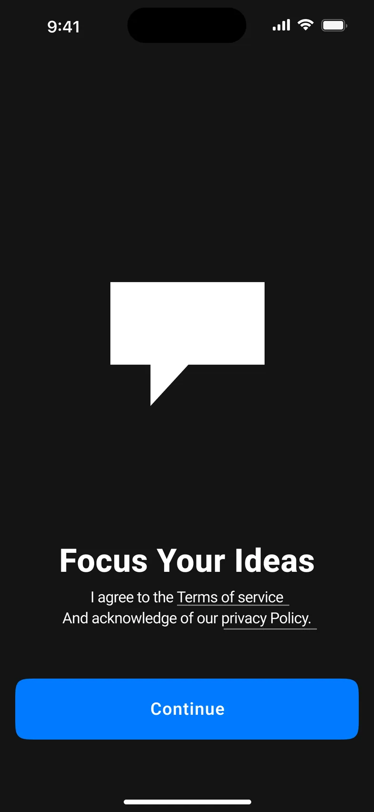
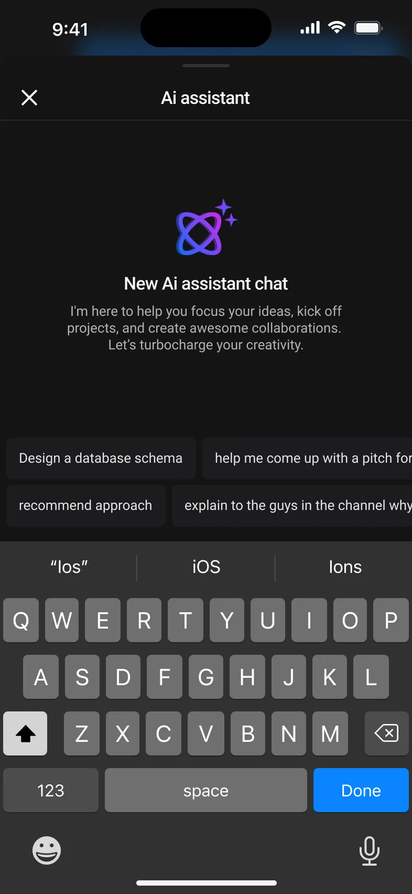
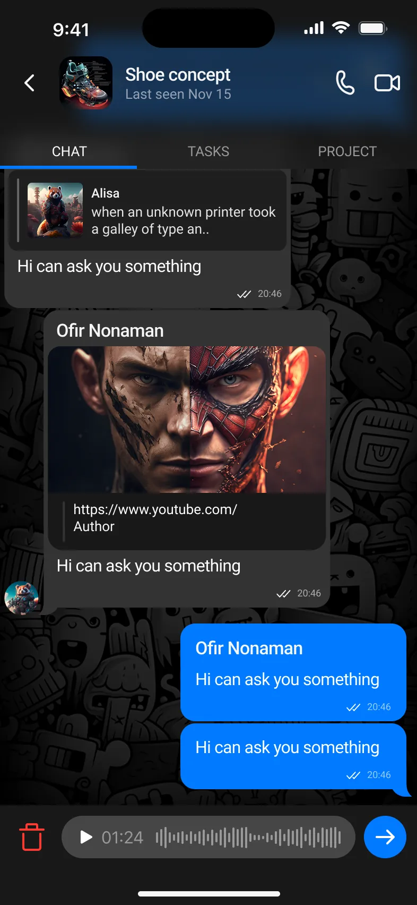
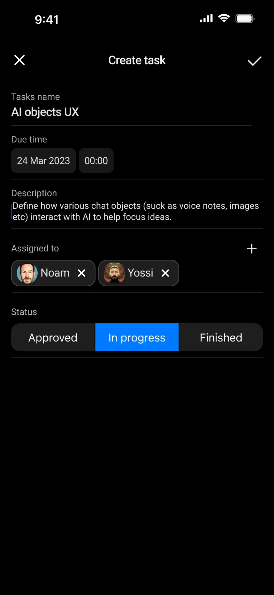
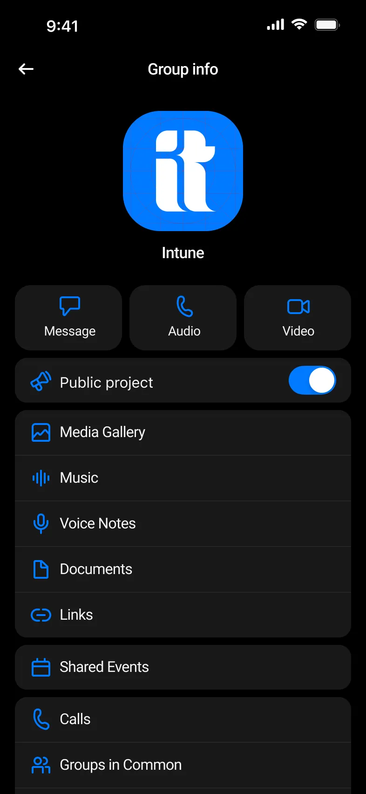
Focus creative projects inside the chat
FYI keeps a creative project where the conversation already is.
Read moreShow less
The work around a creative project is mostly conversation. Each chat carries its own project tab, a message can become a task, and an AI assistant works inside the thread.
- Chats and groupsOne list for people and teams.
- A project tab per chatChat, Tasks and Project sit side by side at the top of every conversation.
- Tasks from chatA message becomes a task with assignees, a date and a status.
- AI inside chatAn assistant that helps with ideas without leaving the thread.
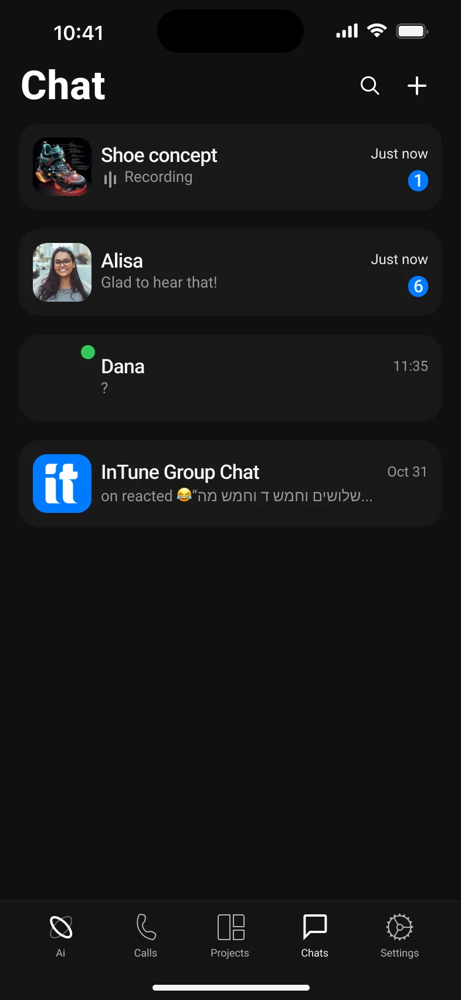
A storyboard before the first message
The brand opens on a speech-bubble mark and three lines that say what the app is for.
Read moreShow less
Then two short steps: verify a phone number, and introduce yourself with a name and your skills.
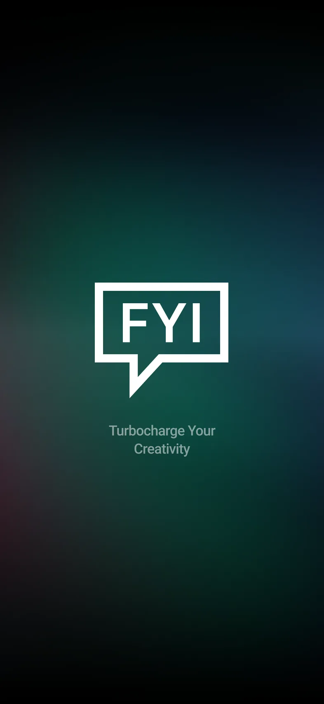
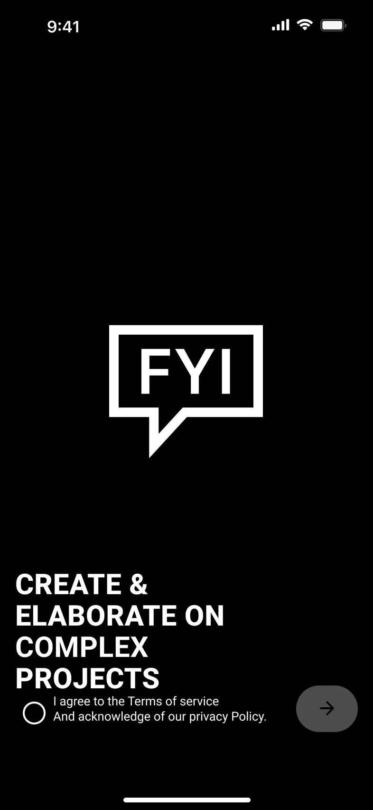
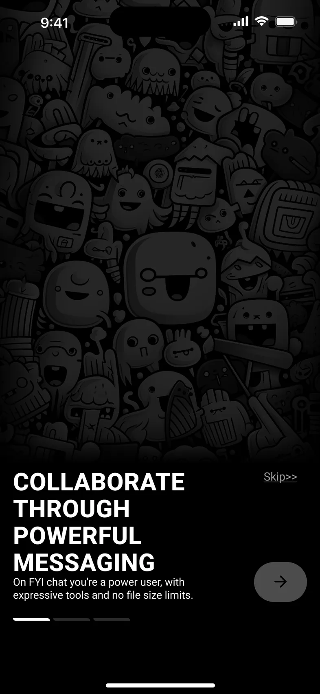
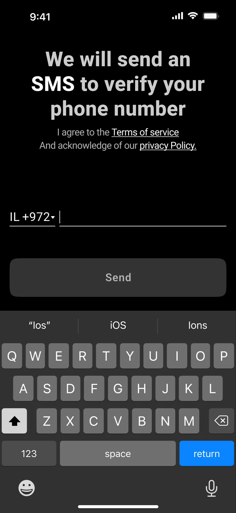
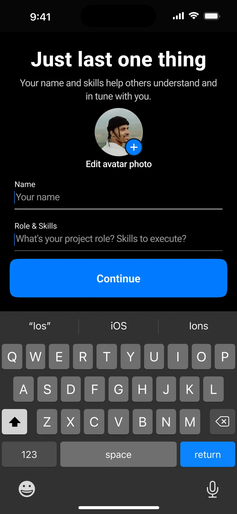
The attachments sheet is where the work starts
Next to Camera and Documents, the attachments sheet holds New Task and an AI button.
Read moreShow less
A new assistant chat suggests where to begin, with prompts like “Design a database schema”. Voice messages record right in the composer.
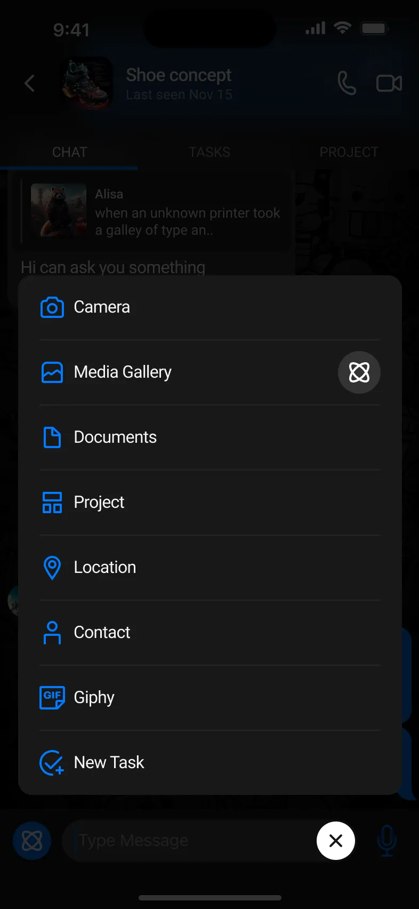
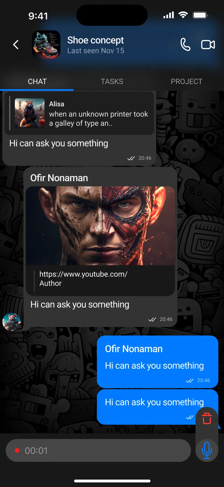
A task without leaving the conversation
New Task sits in the same attachments sheet as a photo.
Read moreShow less
The task keeps everything the team needs in one card, and it shows up in the chat's tasks with its status.
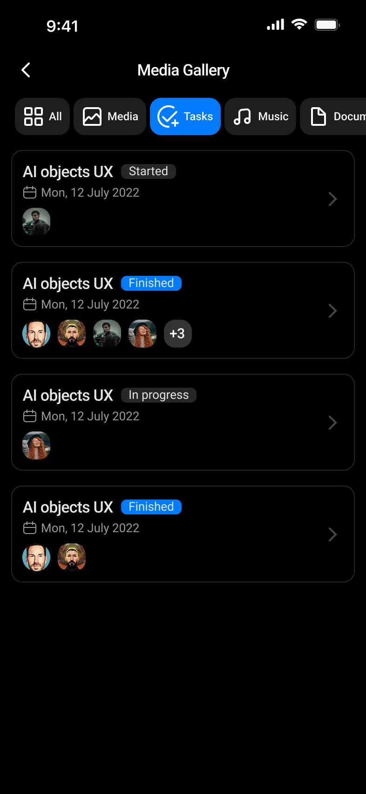
- Name
- What the task is.
- Due date
- A date and a time.
- Description
- The detail behind it.
- Assigned to
- People from the chat, added and removed as chips.
- Status
- ApprovedIn progressFinished
Talk, share the screen, see who read it
Video calls share the screen and keep it in sync.
Read moreShow less
Group info gathers a project's media, music, voice notes, documents and links. Message info shows who read a message and when, with a transcription tab.
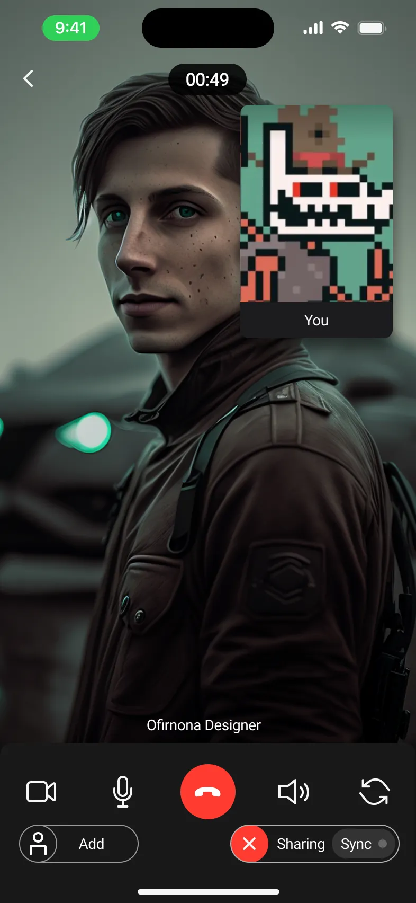
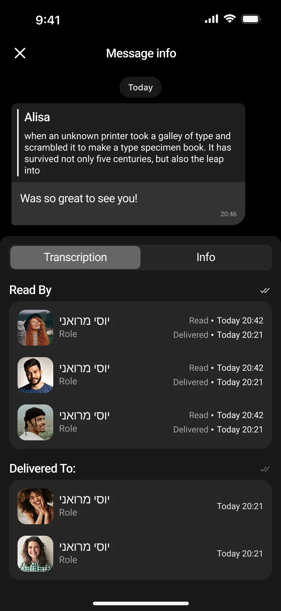
One design system under every screen
Every screen above is built from the Figma file's own design-system page.
Read moreShow less
It runs from the type and color styles up to the chat bubbles and the molecules made from them.
- Typography
- Named type styles for the whole app.
- Color
- Icons
- One icon palette.
- Chat bubbles
- Text, voice, image, reply and link messages.
- Molecules
- The larger pieces built from those parts.
Designed before my AI-first way of working; every screen drawn by hand in Figma.
Design Lab
All screens are exports of my Figma file for FYI, designed at Intune before Hear and framed here in CSS. Quoted lines are the app's own copy.